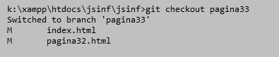
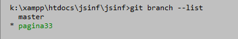
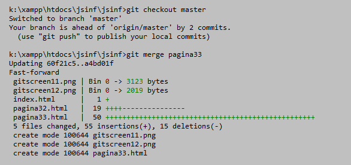

Branches en Merges
Een branche is een ontwikkellijn in het huidige project die onderscheiden is van andere ontwikkellijnen.
Een voorbeeld is bijvoorbeeld dat iemand van het team (of jijzelf) wil proberen om een bepaald onderdeel van een site of applicatie anders op te zetten of een compleet nieuwe feature aan een applicatie toe te voegen. Om anderen of jezelf niet in de weg te zitten bij het werken aan de 'normale' en misschien wel zwaar geteste en perfect werkende ontwikkellijn maak je dan een aparte ontwikkellijn, of in het jargon van Git: een 'branche', een vertakking. Dit is het commando:
git branche "pagina33"
Als je git status zie je geen verschil en dat komt omdat de vertakking wel gemaakt is maar je nog niet naar de vertakking geswitchd bent. Dat doe je met het commando (en we voegen er meteen een git status aan toe:
git checkout pagina33
git status
Met dit als resultaat:

Met
git branch --list

Stel je voor dat je in deze branch veranderingen hebt aangebracht en daar tevreden over bent. De volgende logische stap is dan om jouw veranderingen over te brengen naar de hoofdtak, de master. De volgende commando's zorgen daarvoor:
git checkout master
git merge pagina33
Met dit als resultaat:

Maar wat als ondertussen iemand anders heeft doorgewerkt aan de hoofdontwikkellijn en één of een paar van 'jouw' files niet meer sporen met die hoofdlijn? We hebben dan een 'merge conflict'. Daarover meer op de volgende pagina.